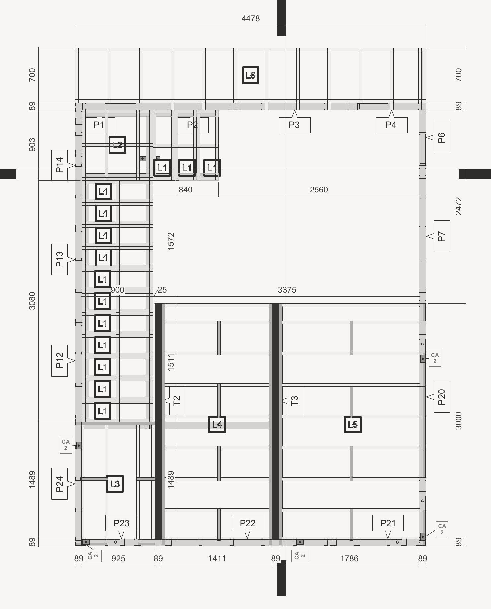
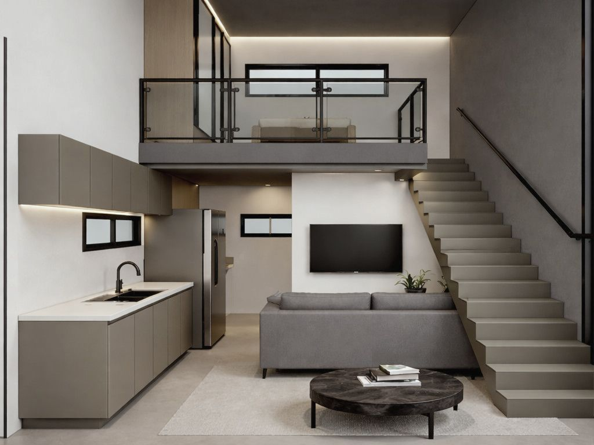
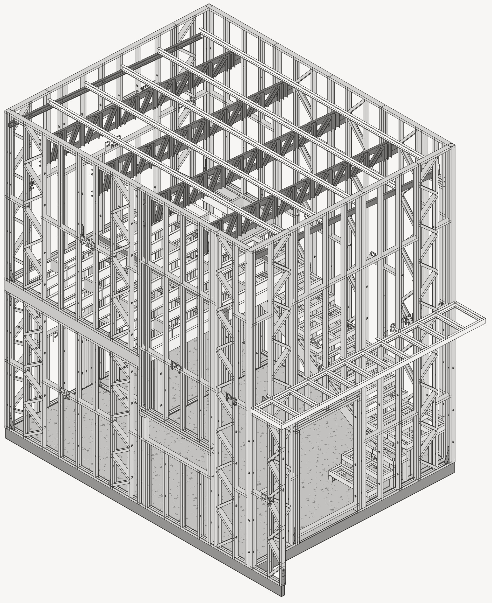
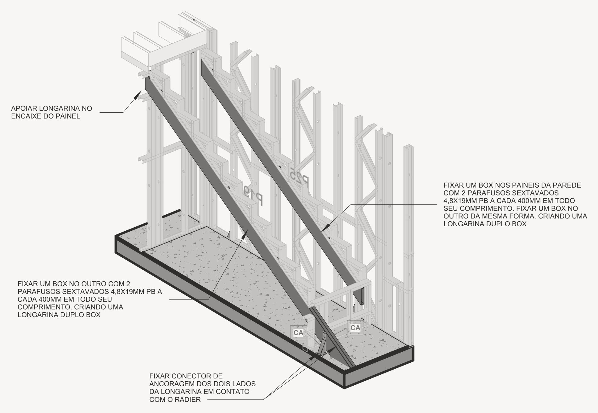

obras / estruturas
Le Blanc Lofts

Loft com mezanino em light steel frame, detalhado para fabricação fora do canteiro.
Cada painel tem a sua folha, com lista de corte: 25 painéis de parede, treliças e lajes. A escada interna também é em steel frame.
São 1.393,54 kg de aço em 37 folhas. Os painéis são ancorados ao radier por chumbadores a cada 800 mm, no eixo dos montantes.
- Local
- Angra dos Reis · RJ
- Sistema
- Light steel frame, fabricação off-site
- Níveis
- Térreo, mezanino e cobertura
- Altura
- 6,00 m
- Aço
- 1.393,54 kg
- Conjuntos
- Painéis P1 a P25, treliças T1 a T3 e lajes L1 a L6
- Ancoragem
- Chumbador 10 × 75 mm a cada 800 mm
- Projeto
- 37 folhas
- Escopo
- Projeto estrutural em steel frame
- Etapa
- Projeto · 2026
Plantas



Cortes




Detalhe

